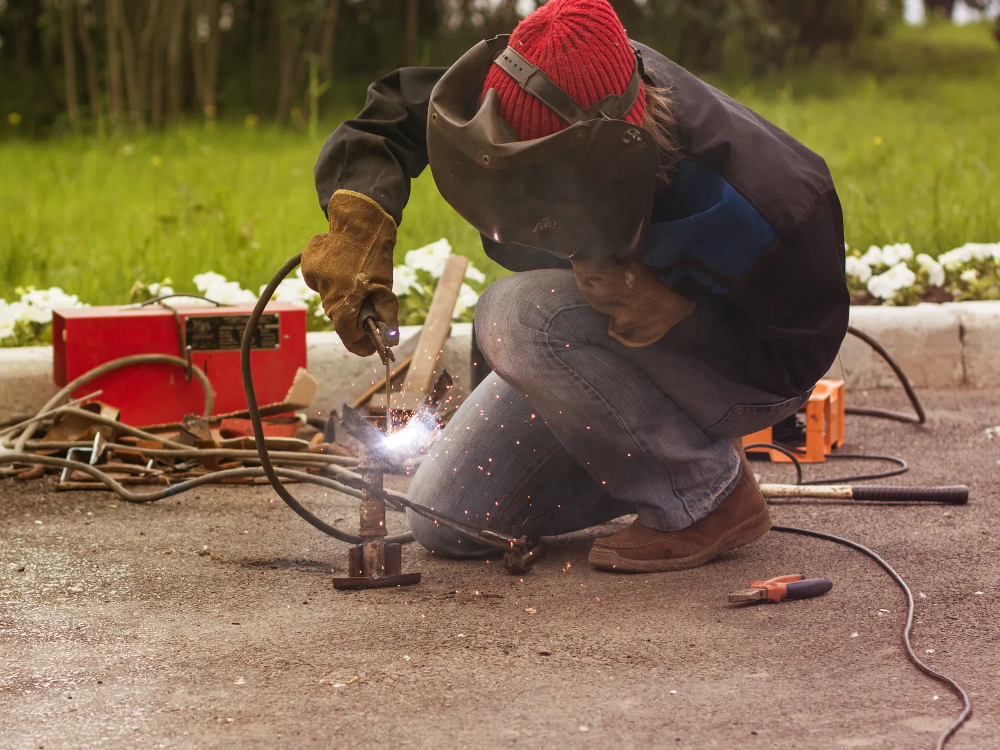

Home · Service Areas · Gretna
Gretna, LA Mobile Welders Company
At Big Easy Mobile Welders, we take a fully equipped mobile welding unit to Gretna homes and businesses for gates, railings, fences and custom steel work. Our licensed, insured welders repair the metal where it is installed, from older ironwork to new fabrication.

We come to the jobWhat Is Part of Every Welding Job We Do in Gretna?
Every welding job we do in Gretna includes an up-front estimate at no charge and no obligation, an experienced welder in a fully equipped mobile unit, joints ground and brushed clean, and a final look at the repair with you. Prices stay transparent, and paying is easy.
Quote Before Work
We inspect the damage and price the repair up front, free and with no hidden fees.
A Welder With Experience
Each repair is handled by licensed, insured welders who have over two decades of experience.
On-Site Equipment
Our mobile unit carries the welding machine and hand tools, so gates and railings are repaired where they hang.
Joints Cleaned to Bare Metal
Brushes and grinders strip old paint, scale and rust from the joint before the first pass.
Old Iron and New Steel
We weld mild steel, stainless steel, aluminum and cast iron, from small repairs to larger custom work.
A Guarantee on the Work
We walk you through the repair, back it with our satisfaction guarantee and offer follow-up support.

What Metal Problems Make Gretna Owners Call a Welder?
Gretna owners usually call a welder when old ironwork or newer steel fails. Gates sag on worn hinges, porch and stair railings rust at the base, fence pickets snap, and balcony or window ironwork corrodes. Businesses call for brackets, frames and one-off pieces that cannot be bought off a shelf.
- Gate Sagging on Old Hinges
- Rusted-Through Fence Pickets
- Stair Railing Pulling Loose
- Corroded Balcony Ironwork
- Broken Security Bars
- Cracked Steel Bracket
- Bent Fence After High Winds
- A Matching Replacement Piece
What Welding Work Can Our Team Take On in Gretna?
Our team takes on Gretna gate, fence, railing, pipe, arc and custom welding jobs, and we also repair metal window frames, handle specialized work and fabricate new pieces as part of our on-site mobile welding. Our own welders come to the property, and each job opens with a free estimate.

Pipe Welding
Pipe and pipeline repair on site, with stick and gas-shielded processes matched to the pipe.
View pipe welding →
Fence Welding
Fence repairs and custom fence fabrication, with the material and process chosen for your fence.
View fence welding →
Gate Welding
Gate repairs and custom gates in steel or aluminum, with materials and tools covered in your estimate.
View gate welding →
Iron Railing Welding
Custom indoor and outdoor railings for stairways, decks and balconies, built to fit your property.
View railing welding →
Arc Welding
Shielded and non-shielded arc welding for commercial and residential customers.
View arc welding →
Custom Welding
Custom ironwork, estimated before we start so we arrive with the right equipment for the job.
View custom welding →
What Signs Mean You Need a Welder in Gretna?
Gretna metalwork needs a welder once it loosens, a joint cracks or rust starts flaking off. Older metal gives warning signs before it fails, and repairing it at that stage usually saves more of the original piece than waiting until a post or panel breaks.
Play in a Post or Panel
If a railing post or fence panel rocks when pushed, the weld or the base metal may be giving way.
Rust That Scales Off
Layered rust that peels off in sheets has usually eaten deep, and that metal often needs replacing first.
Broken Decorative Pieces
Snapped scrolls, pickets or finials on older ironwork can often be rewelded or matched.
Why Does Welding in Gretna Call for Extra Care?
Welding in Gretna calls for extra care because so much of its metal is old. About one in six homes was built before 1940, and the historic downtown holds older ironwork that needs careful repair. About a third of homes also sit in buildings with two or more units, so shared railings, stairs and gates are common alongside single-family work.

Gretna's housing stock and history set the tone for the metalwork we handle.
- Older Than Most.Census Bureau estimates from the 2020 to 2024 American Community Survey show 16.5 percent of Gretna homes dating to 1939 or earlier, and more than a third to before 1960.
- A Mix of Housing Types.The same survey counts 56.8 percent of Gretna's 8,352 housing units as single-family detached, with about a third in buildings of two or more units.
- A Historic Downtown.The city's 2022 economic profile describes Historic Downtown Gretna as about 50 square blocks on the banks of the Mississippi River.
- Riverside Humidity.Steel near the river spends much of the year in humid air, so a fresh weld should be primed and painted. Our guide on keeping welded metal free of rust explains how.

Why Work With a Local Mobile Welder in Gretna?
Hiring a local mobile welder in Gretna keeps heavy ironwork on site, which matters for gates and railings set in masonry or concrete. Behind the work is a company owned by locals, welding around New Orleans for many years, with clear pricing and support that continues after the job.
Rooted in the Area
We are locally owned and have welded for New Orleans area homes and businesses for many years.
Repairs Where Metal Stands
Fully equipped mobile units mean railings and gates get welded in place, not hauled to a shop.
Trained and Insured
Every repair is handled by a licensed, insured, highly trained welder.
Easy to Budget
Free estimates, transparent pricing and easy ways to pay keep the numbers clear.
What Happens During a Mobile Welding Appointment in Gretna?
A mobile welding appointment in Gretna takes four steps: you reach us by phone or online for a free estimate, sign off on the quote and pick a weekday time, a welder preps and joins the metal on your property, and we go over the finished repair together, with support afterward if anything needs attention.
Reach Out
Phone (504) 370-2757 or send our online form describing the metal and the problem.
Book the Visit
Once the quote works for you, choose a weekday visit from 8 AM to 3 PM.
On-Site Repair
A welder sets up at your property, cleans the joint and completes the weld.
Final Check Together
We check the weld with you, and any later follow-up is one phone call away.
 The rig comes to you
The rig comes to youHow Do You Prepare for a Welding Visit in Gretna?
Ahead of a welding visit in Gretna, note what the metal is, check how our mobile unit can get close to it, and choose between saving the original piece and having a new one fabricated. For older ironwork, photos of the damage and of any decorative details help us plan the repair.
Know the Material
Cast iron, wrought iron, mild steel and galvanized steel all weld differently. Our article on welding galvanized steel explains why coated metal needs extra prep.
Access and Parking
Tell us where the unit can park and whether gates are locked or pets are out.
Repair or Replica
Saving an original piece and building a new one are priced differently, so tell us which way you lean.
Can Our Mobile Welders Reach Cities Beyond Gretna?
Gretna is one stop among several for our mobile welders, who also drive to New Orleans, Metairie, Kenner, St. Rose, LaPlace, Slidell, Mandeville, Covington, Madisonville, Hammond and Baton Rouge. A customer in any of those places gets our trained welders, our equipped units and a free estimate.
- New Orleans
- Metairie
- Kenner
- Gretna
- St. Rose
- LaPlace
- Slidell
- Mandeville
- Covington
- Madisonville
- Hammond
- Baton Rouge
Not sure we cover your street?
Request a free estimate or call us, and we will confirm before we book the job.
Where Our Rigs Roll
Schematic, not to scale. New Orleans and the 11 nearby cities we serve.
About Gretna
Gretna is a city on the West Bank of Jefferson Parish, just across the Mississippi River from downtown New Orleans.
Seat of Jefferson Parish
Gretna has been the parish seat since 1884, and Jefferson Parish government buildings stand in its downtown.
Three Settlements, One City
Gretna grew from McDonoghville, Mechanickham and the original Gretna, which Governor Luther E. Hall proclaimed the City of Gretna on August 20, 1913.
Population and Land
The 2020 Census counted 17,814 people in Gretna, on about 4 square miles of land.
Things To Do
Most outings in Gretna start downtown, near the river and the old neighborhoods.
Gretna Heritage Festival
Held in historic downtown, the festival features five stages of performers, according to the city's economic profile.
Museums Downtown
The Louisiana State Fire Museum fills the David Crockett Firehouse, and the German-American Cultural Center traces German immigrants in Louisiana from 1720 on.
Levee Trail and Mel Ott Park
The Gretna Levee and Bicycle Trail suits a riverside ride, and Mel Ott Park honors the Gretna-born ballplayer with a bronze statue.
Nearby Suburbs
Gretna's nearest neighbors in our service area sit across the river or a short drive along it.
New Orleans
New Orleans faces Gretna across the Mississippi, and JP Transit's W2 bus links the West Bank with the city's Central Business District.
Metairie
Across the river on the East Bank, Metairie is the community the parish tourism office names as Jefferson Parish's largest.
Kenner
Kenner, farther west on the East Bank, hosts Louis Armstrong New Orleans International Airport.
Interesting and Fun Facts
Gretna's history runs from steam ferries to baseball's Hall of Fame.
Built Around a Ferry
Part of Gretna was developed by the St. Mary's Market Steam Ferry Company in 1838.
The Free State of Jefferson
After Gretna became the parish seat in 1884, it was often called the Free State of Jefferson because of open gambling, per the parish tourism office.
Mel Ott's Hometown
Born in Gretna in 1909, Mel Ott joined the New York Giants in 1926, hit 511 home runs and entered the Hall of Fame in 1951.
Public Transportation
Jefferson Parish Transit runs Gretna's bus service, and the RTA has added festival ferries from Canal Street.
- W6 Gretna Local: connects historic downtown Gretna with the Wilty Terminal and the Algiers Ferry Terminal, Monday through Friday.
- W2 Westbank Expressway: runs seven days a week from the Walkertown and Wilty terminals into the New Orleans Central Business District.
- Wilty Terminal transfers: the W2, W3 Lapalco and W8 Terrytown routes all connect with the W6 at Wilty.
- MITS: origin-to-destination paratransit for qualifying riders, covering developed West Bank areas north of the Hero Cutoff.
- Festival ferries: in 2024 the RTA ran special ferries from the Canal Street Terminal to the Gretna Heritage Festival, with the City of Gretna covering the cost.
Where Do You Ask for a Free Welding Quote in Gretna?
Ask for a free welding quote in Gretna: call (504) 370-2757 or write a short note through our online form. Tell us what needs repair or fabrication, where on the property it is and, for older ironwork, whether the original look matters, and we return a transparent quote with no obligation.
Loading the estimate form...
If it does not appear, call us at (504) 370-2757.

Which Welding Questions Do Gretna Owners Ask Most?
Gretna owners ask who repairs old iron fences and gates, whether scrollwork and balconies can be fixed, rod iron versus wrought iron, how often ironwork needs paint, widening a gate, gates on brick pillars and whether Gretna is the parish seat.
Who repairs old iron fences and gates in Gretna?
We repair older iron fences and gates in Gretna on site. Loose pickets, broken hinges and cracked rails can often be rewelded, and sections rusted beyond saving can be cut out and replaced with new metal. We look at the piece during a free estimate and explain what can be kept.
Can a welder repair decorative scrollwork on iron railings?
Broken or loose scrollwork on iron railings can often be rewelded in place, and missing scrolls can sometimes be bent to a similar shape. Very old or cast pieces may not match exactly, so we judge what can be saved during the free estimate.
Can a welder repair a balcony railing?
A welder can usually repair a balcony railing where it stands, rewelding loose balusters, cracked joints and rusted post connections. Safe access gets planned around the height. The anchor points get checked too, because a railing is only as solid as its mounting.
Is it rod iron or wrought iron?
The correct term is wrought iron, meaning iron that is worked or hammered into shape, and rod iron is a common misspelling. Most railings and fences sold as wrought iron today are actually mild steel made to look traditional, which welds well but needs paint to hold off rust.
How often should wrought iron be painted?
Wrought iron and steel ironwork usually needs repainting every few years, and sooner in humid air. The finish is a better guide than the calendar: once paint chips, bubbles or shows rust spots, those areas should be cleaned to bare metal, primed and repainted before the rust spreads.
Can a metal gate be made wider?
A metal gate can often be widened by cutting the frame and welding in a new section, or by adding a second leaf to make a pair. The posts and hinges must carry the extra weight, and sometimes a new gate is the better choice.
Can a welder repair a gate hung on brick pillars?
A welder can usually repair a gate hung on brick or masonry pillars without taking the pillars apart. Hinge pins and brackets set in the brick are rewelded or replaced while the masonry is shielded from spatter. Loose anchors in crumbling mortar may need a mason.
Is Gretna the parish seat of Jefferson Parish?
Yes. Gretna is the seat of Jefferson Parish and has held that role since 1884. Parish government buildings sit in downtown Gretna, on the West Bank across the Mississippi River from New Orleans, and the 2020 Census counted 17,814 residents in the city.


Book Your Free Mobile Welding Estimate
Tell us what needs welding, and we will bring the rig to your door anywhere in the New Orleans area.